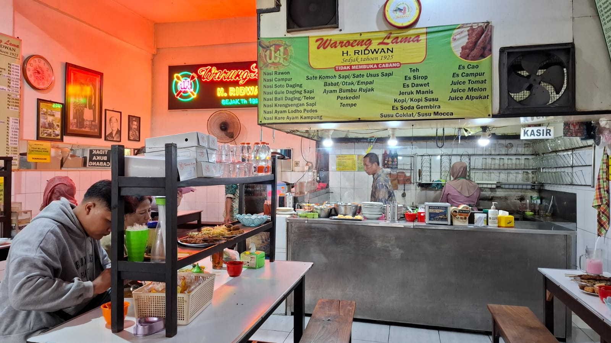

Beranda
Tentang Kami
Galeri
Blog
Penulis
Blog
Temukan berbagai artikel menarik seputar wisata, kuliner, dan tips di Malang Raya.
Beranda
Blog
Semua
Malang
Batu
Cafe
Restoran
Pegunungan
Pantai
Air Terjun
Taman
Kuliner
Spot Foto
Toko Oen Malang: Jejak Nostalgia Kuliner Abadi di Jantung Kayutangan
Warung Ronde Titoni Malang: Kuliner Legendaris yang Tak Pernah Sepi Pengunjung

Warung Lama Haji Ridwan Menjaga Api Cita Rasa Rawon Legendaris Malang Selama Seabad
Nostalgia Rasa di Depot Hok Lay Malang: Ikon Kuliner Legendaris Sejak 1946
Museum Angkut Batu - Wisata Edukatif dan Instagramable di Malang Raya
Jatim Park 1, 2, 3 Bedanya Apa? Panduan Lengkap Biar Nggak Salah Pilih!
Tiket Bromo Berapa? Cek Harga Terbaru 2025 & Rincian Biaya Lainnya!
Coban Rondo - Pesona Alam, Legenda, dan Surga Wisata Malang
Pantai Balekambang – Tanah Lot-nya Jawa Timur dengan Pesona Pura di Tengah Laut
Bakso Kota Cak Man - Sejarah, Menu Andalan, & Panduan Cabang Lengkap
Warung Nasi Sidik Batu - Rawon Legendaris dan Panduan Lengkap untuk Pengunjung
Mesir Restaurant - Wisata Kuliner Timur Tengah Autentik di Indonesia
Pecel Kawi Malang Hj. Musilah – Kuliner Legendaris dengan Cita Rasa Autentik
Pantai Teluk Asmara – Surga Tersembunyi dengan Panorama Eksotis di Malang Selatan
Kampung Biru Arema – Ikon Kreativitas Warga Malang yang Instagramable
Eco Green Park Malang – Wisata Edukasi & Rekreasi Keluarga yang Seru
Coban Putri Malang – Air Terjun Cantik untuk Liburan dan Spot Foto Hits
Kampung Warna Warni Jodipan – Wisata Urban Kreatif dengan Spot Foto Aesthetic